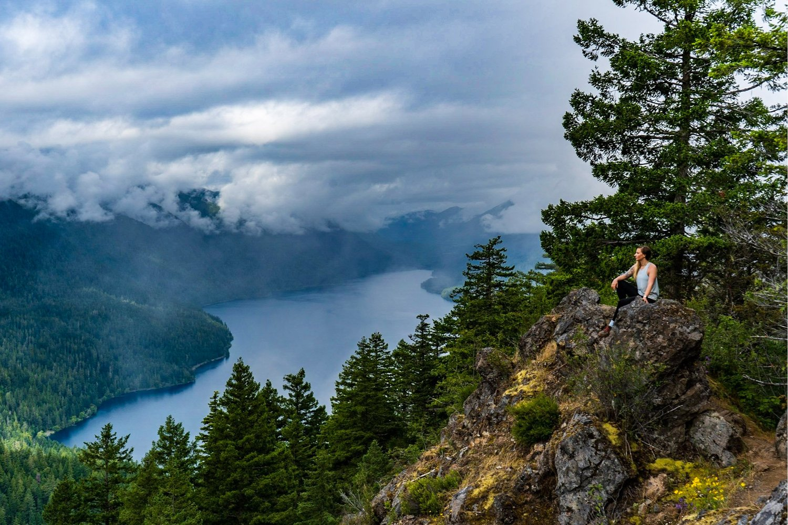

Located in the northwest corner of Washington state, Olympic National Park encompasses almost one million acres of land and consists of four different biospheres. The number of people who visit this park increases by hundreds of thousands each year, so it's important to navigate Olympic with a plan in mind!
Here, you'll learn about the popular trails, expansive forests, and beautiful lakes to add to your trip itinerary and explore across the national park. Navigate through the menu bar above for more descriptions, and leave a review of your experience of visiting Olympic National Park!